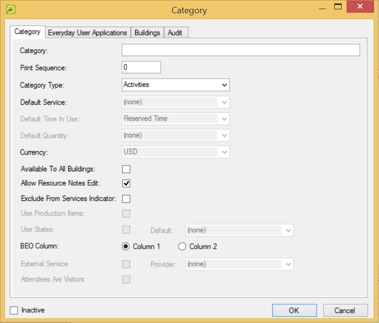
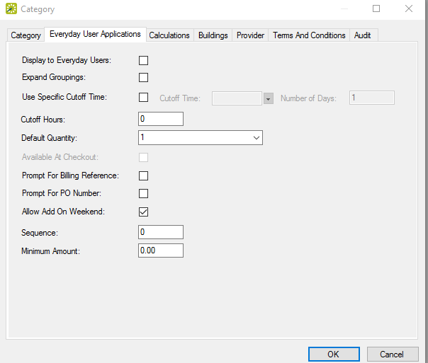

Categories Window

To configure categories in EMS Desktop Client, complete the following steps:
Categories Window
TIP: You can define a category here with the Category Type of Attendees to enable users to add attendees to a booking on the
Category Dialog Box

|
Field |
Description |
|---|---|
|
Category |
The name or description for the category, for example, A/V Equipment or Furniture (maximum of 30 characters, including spaces). |
|
Print Sequence |
If items from multiple categories have been reserved for an event, then the print sequence determines the order in which this information is printed on the confirmation and other reports. Categories are ordered from lowest to highest sequence number, with the category with the lowest sequence number being displayed first. Note: If you leave the print sequence set to the default value of zero for all items, then by default, the items are displayed alphabetically. |
|
Typically, the determining factor is how the category is to be used.
Note: The Attendee category type does not typically relate to attendees invited to a meeting using the optional EMS for Outlook add-in or using Integration to Microsoft Exchange module for EMS Web App or EMS Mobile App.
Tip: If you select Resources w/o Service Orders, Resources w/ Service Orders, or Catering, then the Use Production Items option becomes available. |
|
|
Services are defined at the resource level. (See Also: Configure Resources for a Category.) After you define your resources and services, then you can edit the category if needed and define a default service. |
|
|
Default Time in Use |
Available only if Catering, Resources w/ Service Orders, or Resources w/o Service Orders is selected as the category type. Indicates the time that the items in the selected category should be in use for the Reserved Time or for the Event Time. |
|
Default Quantity |
Depending on the category that was selected, one or more of the following options are available:
|
|
Currency |
Select the currency to be used for pricing all the resources in the category. Note: If the appropriate currency is not available, you can configure it. See Configure Currencies. |
|
Available to All Buildings |
Select this option if resources from this category are to be available to all buildings. Note: If you do not select this option, then on the Buildings tab, you must specify the buildings for which resources from this category are to be available. |
|
Allow Resources Notes Edit |
If selected, EMS Desktop Client users can edit the Notes field for the resource. |
|
Exclude from Services Indicator |
In various EMS locations, such as the Reservation Book, the Navigator, and the Edit Booking form, EMS provides an indication that services exist for a booking. Select the Exclude from Services Indicator option to exclude a category from displaying as a service on the booking. |
|
Select this option to define production items for the category. Production Items are typically used for Catering category types where Note: Production items are defined at the resource level. See also: Configure Resources for a Category and Define Production Areas and Production Items for a Catering Resource. |
|
|
Select this option if you want to define process phases, or states, for the category, such as “Assigned,” “Out for Delivery,” and “Delivered.” If you select the Use States check box, a States tab appears. On this tab, define the different states that you want to configure in support of your category's workflow. Note: After you define your states, you can edit this category if needed and specify a default state. |
|
|
BEO Column |
Indicates in which column the category is to be displayed when the Banquet Event Order (BEO) report is printed in its standard two column format. Select Column 1 to display the category in the left column. Select Column 2 to display the category in the right column. |
|
External Service |
Select the External Service option if the provider of the resources for this category is external to your organization, and then select the provider on the Provider drop-down list. Note: The External Service check box is only available for the Notes category type and if the EMS system parameter Show External Service Orders on Categories is set to Yes. See EMS Desktop Client Parameters for more information. Note: If the appropriate service provider is not available, contact EMS Support for assistance in configuring the provider. |
|
Select the Attendees are Visitors option to automatically mark all attendees who are added to a booking as a Visitor. (The Visitor option is automatically selected on the Attendee dialog box.) |
Everyday Applications Tab of the Category Dialog Box

IMPORTANT: Settings on the Everyday Applications tab control behavior for Everyday User Applications:
|
Field |
Description |
|---|---|
|
Display to Everyday Users |
If selected, |
|
Expand Groupings |
If selected, the resource items for a grouping are displayed immediately when a |
|
Use Specific Cutoff Time |
Indicates how far in advance of a booking a |
|
Cutoff Hours |
Available only if you do not select the Use Specific Cutoff Time option. With this option, the restriction is imposed based on the number of hours before the event occurs rather than time of day. |
|
Default Quantity |
From the Default Quantity drop-down field, you can select 1, Attendance, or Blank. The default quantity that you select is automatically filled in by the system when an |
|
Available at Checkout |
Select Available at Checkout if this category is to be displayed as part of the initial Room Request process in Note: For example, if an Attendee-type category is associated with a booking template and the Available at Checkout option is selected, then users will be able to add or remove attendees during the booking. If Available at Checkout is not selected, users will only be able to manage attendees on the Reservation Details > Services page once the reservation is created and they are in edit mode. |
|
Prompt for Billing Reference Prompt for PO Number |
Select this option if
Note: Selecting the Prompt for Billing Reference or Prompt for PO Number option does not require the user to enter the billing reference or purchase order values. Instead, selecting these options only has the system prompt users to enter the values. The behavior of these fields (required, validated, or displayed) is controlled in the Billing Reference Validation and PO Number Validation Everyday User Applications system parameters in Billing Reference field options:
Additionally, the Billing Reference Validation parameter will always determine whether it is optional, required, or required and validated. See Also: Configure Field Behavior for Billing Reference and PO Numbers. |
|
Allow Add On Weekend |
Select this option to allow a |
|
Sequence |
Determines the order in which the category is displayed in a list of categories in Note: If you leave the sequence set to the default value of zero for all categories, then by default, the categories are displayed alphabetically. |
|
Minimum Amount |
The minimum purchase amount that is required for a user to submit a new service order in |
|
Inactive |
To add the category as an active category, do NOT select the Inactive check box. To inactivate the category, select the Inactive check box. |